Mes expériences des LAN Parties
LAN Party - Novembre 2023

Ma toute première LAN a été faite le 1er Novembre 2023. Au départ nous avions un évènement prévu avec les amis mais à cause de plusieurs soucis, nous avons été contraint d'annuler l'évènement planifié. Et par la suite nous en sommes venus à trouver une autres idée d'évènement. Et c'est là que l'idée d'une LAN nous est venu en tête.
Nous avons donc préparé cela en une semaine, il a donc fallut réfléchir au lieu, au nombre de personne qui allait être présente, au matériel nécessaire, aux jeux auquels on allait jouer. Bref une LAN se prépare à l'avance, il y a en général beaucoup de monde à une LAN, il faut trouver une date où tout le monde sera présent, jouer à des jeux qui plait à tout le monde un minimum.
Pour cette LAN là j'étais l'organisateur, cela s'est fait dans mon garage, sur une table faite avec des planches et des traiteaux. L'organisateur doit préparer en avance la table donc la veille, cela fait gagner du temps pour le jour J. Une lan au minium dure une journée entière. Il faut donc des boissons et de quoi manger pour tout le monde. Il faut prévoir des snacks. Pour ce qui est du matériel, chacun ramène son matériel (écran, pc, périphériques, tapis de souris), l'organisateur doit aussi prévoir des rallonges, des prises-multiples. Si vous êtes 5 ou plus il est préférable de répartirs le courant sur deux disjoncteur différent. De sorte à pas abusé d'un seul disjoncteur au risque que le courant saute. Et quand un PC est sous tension et qu'il y a coupure de courant, cela n'est pas bon pour lui.
Les jeux auxquels nous avons joués sont : Valorant, The Forest, Fall Guys.
Les moments mémorables de cette LAN sont les moments où l'ont rit le plus entre ami. Cette première LAN donne une première impression de ce qu'est les LAN et comment ça se déroule. Nous n'avions qu'une hâte c'était de se retrouver à une prochaine LAN.
Si vous le souhaitez, vous pouvez consulter toutes les photos et vidéos qui ont été faites à la LAN en allant sur ce lien (mpd: 124) Accéder aux photos/vidéos
LAN Party - Mars 2024

Nous sommes le 2 Mars 2024. C'est le jour de la deuxième LAN, nous sommes tous très excités. Les invités sont à nouveau : mes amis et deux nouveaux dont un qui est venu de Paris juste pour cette journée. Nous nous étions un peu plus préparé cette fois ci. On a prévu à l'avance les jeux auxquels on allait jouer. Les logiciels qu'on allait utiliser ont été mis à jour. Pour plus de souvenir nous avons filmé à la GoPro l'installation de la LAN, c'est-à-dire l'arrivée des invités, l'installation de tous les pc.
Les jeux auxquels j'ai joués à cette LAN sont : Valorant, Kink of The Castle, Lethal Compagny, du doublage.
Valorant pour rappel c'est dans le même style que les counter-strike dans les années 2000. Deux équipes de 5 joueurs s'affrontent, une équipe qui doit poser un spike sur un site et l'autre équipe doit tout faire pour les en empêcher.
King of the Castle est un jeu de rôle multijoueur en ligne où les joueurs incarnent des nobles dans un royaume médiéval fictif. Dans ce jeu, un joueur assume le rôle du monarque, tandis que les autres jouent des nobles issus de différentes factions, chacune ayant ses propres objectifs et ambitions politiques. Le jeu est centré sur la prise de décisions stratégiques, les négociations, et les complots pour influencer le destin du royaume. Les choix du roi influencent l’avenir du royaume, mais les nobles tentent souvent de renverser la monarchie ou de promouvoir leurs propres intérêts.
Lethal Compagny est un jeu d'horreur coopératif en multijoueur où les joueurs incarnent des employés d’une entreprise envoyés dans des bâtiments abandonnés pour y récupérer des objets de valeur. Le danger ? Des créatures hostiles rôdent, chacune ayant des comportements spécifiques qu'il faut comprendre pour survivre. La coopération et la discrétion sont essentielles, car un seul faux pas peut mettre toute l’équipe en danger!
Doublage pour ce qui est du doublage le principe est simple, on prend un extrait de film, on coupe les voix et on fait défiler un bandeau avec les textes de ce que dit les acteurs mais avec nos voix! Cela donne des situations assez "rigolotes" puisque par exemple si vous doublez "The Rock" (Dwayne Johnson) qui est assez balaise physiquement parlant. Eh ben si vous avez une voix par exemple aigue et que vous le doublez cela peut-être très hillarant !
Nous avons doublé les films Jumanji, Les Bronzés font du ski, Kuzco, Retour vers le futur, le Chat Potté 2, Monstre Academy, Moi Moche et Méchant...
Si vous souhaitez voir cette partie là qui a été filmé vous pouvez consulter la vidéo "Lan du 2 mars 2024" qui sera dans le lien suivant (mdp :1234) Accéder aux photos/vidéos
LAN Party - Juillet 2024
Ma dernière LAN a été faite le 10 et 11 juillet 2024. Elle a été faite pour fêter l'obtention de notre baccalauréat avec les amis. Et ça a été la plus grosse LAN qu'on a faite moi et mes amis.
On a fait gros à celle ci, on l'a fait sur deux jours, et on a prévu plusieurs jeux, mais cette fois, on a prévu des activités extérieurs. Laissez moi vous raconter tout ça.
En premier voici l'organisation qui a été prévue par moi même, histoire d'avoir une idée de ce qu'il y a à faire: 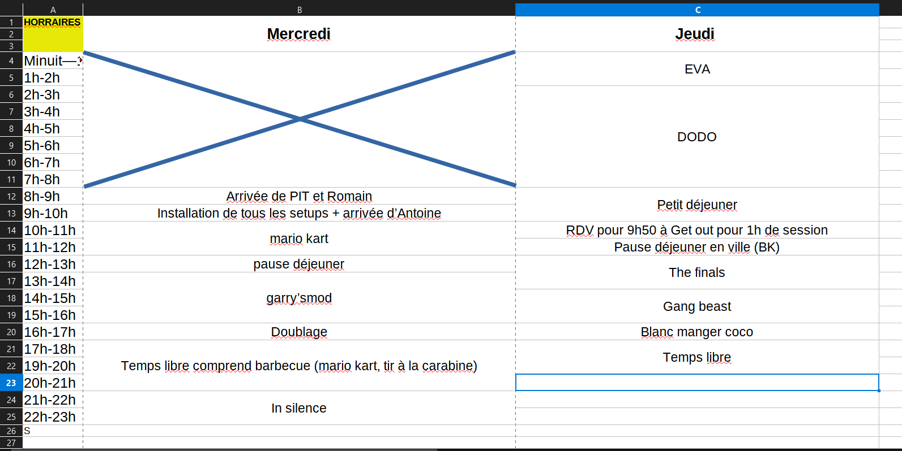
Comme d'hbaitude on attend les invités avec la table de prête, une fois qu'ils sont arrivés on installe tous les pc et écran etc.
Les jeux auxquels on a joués sont Garry' mod, In Silence, Gang Beast et Blanc manger coco
Explication des jeux
Garry's mod est un jeu sandbox qui offre une liberté totale aux joueurs pour créer, manipuler et expérimenter avec des objets, des personnages et des environnements en utilisant le moteur Source de Valve.
Pour faire simple c'est un jeu sur lequel il y a plusieurs mode de jeu comme : Murder, Hide and Seek, DeathRun.
 Nous avons joué au mode "DeathRun" traduit de l'anglais "Parcour de la mort", le but est le suivant : plusieurs joueurs qu'on appel les runners vont devoir traverser tout d'un parcour avec des pièges mortels. Il y a un autre joueur qui lui controle les pièges, il doit les activer au bon moment pour tuer les runners.
Nous avons joué au mode "DeathRun" traduit de l'anglais "Parcour de la mort", le but est le suivant : plusieurs joueurs qu'on appel les runners vont devoir traverser tout d'un parcour avec des pièges mortels. Il y a un autre joueur qui lui controle les pièges, il doit les activer au bon moment pour tuer les runners.
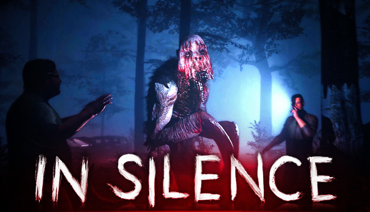 Ensuite il y a In Silence, est un jeu d’horreur multijoueur où les joueurs sont confrontés à une créature redoutable appelée le Rake. L’un des joueurs incarne ce monstre aveugle mais doté d'une ouïe extrêmement fine, tandis que les autres jouent des survivants qui doivent coopérer pour échapper au Rake en se déplaçant discrètement et en trouvant un moyen de s’enfuir. Chaque bruit peut trahir leur position, rendant chaque mouvement périlleux.
Nous avons décidé de jouer à un jeu d'horreur le soir afin de rendre notre soirée frissonnante.
Gang Beast est un jeu de combat multijoueur hilarant et chaotique dans lequel des personnages aux physiques gélatineux s’affrontent dans de petites cartes (arène). Les combats se déroulent dans des environnements variés et remplis de pièges, comme des toits d’immeubles, des camions en mouvement ou des usines avec des machines dangereuses. 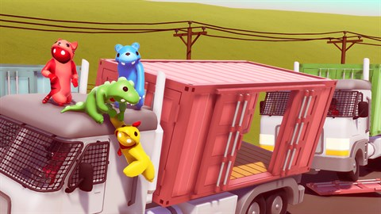
Blanc manger coco est un jeu de société d'ambiance destiné aux adultes, conçu pour animer les soirées entre amis. Le principe est simple : chaque joueur doit compléter des phrases à trous en utilisant des cartes réponses, dans le but de créer la combinaison la plus drôle ou décalée. 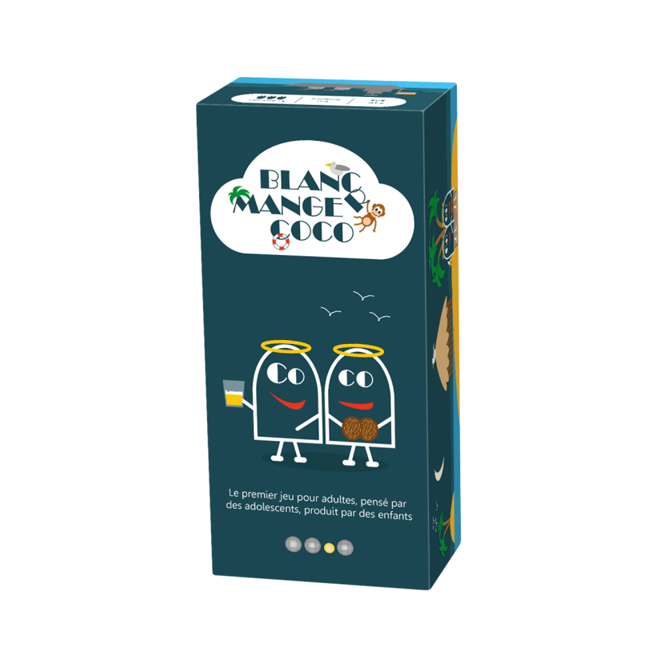
Équipements
Durant cette LAN nous avons préparé un setup digne de geek. C'est-à-dire que moi, l'organisateur, j'avais 3 pc à ma disposition. Un pour jouer aux jeux, un autre pour gérer la musique qui sortait sur les enceintes pour donner de l'ambiance à la LAN, et un troisième pc pour gérer le son de tout le monde. Je m'explique, pour faire des souvenirs, on a tout filmé, et donc tout le monde avait un micro, sur ce troisième pc je gérais avec une table de mixage Virtuelle le son des micros de tout le monde.
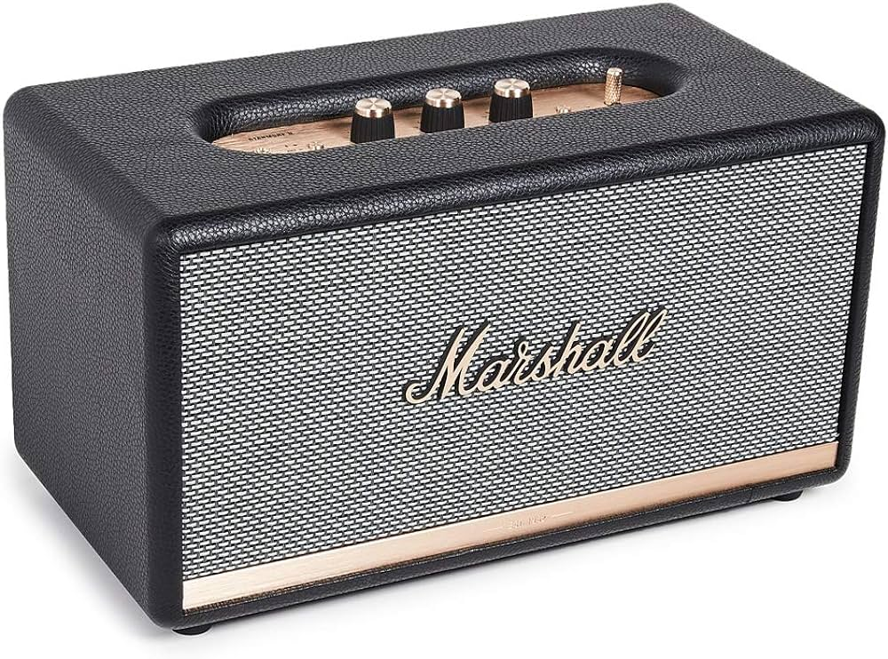Nous avions deux enceintes de Marshall pour profiter plainement de la musique.
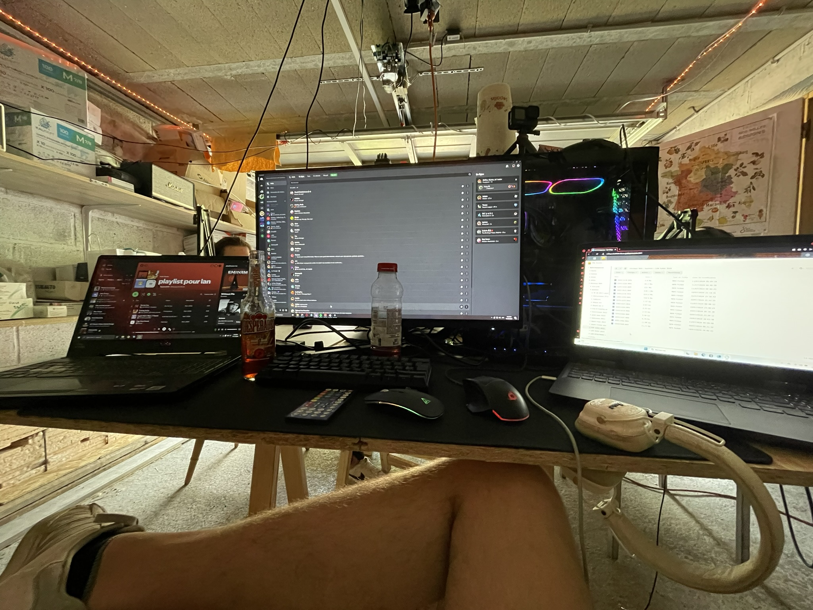Ici c'était ma place, le "maître de LAN", celui qui gérait le tout, avec les trois pc dont je parlais plus haut.
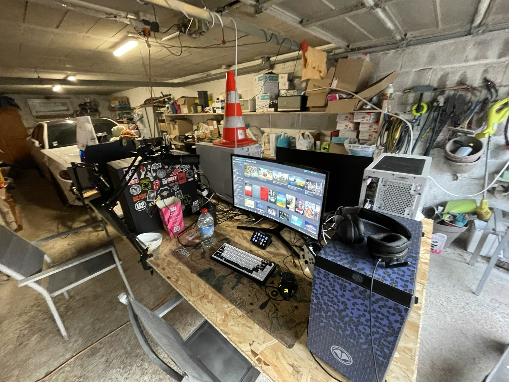L'ensemble de la table (ne posez pas de question sur le cône de chantier).
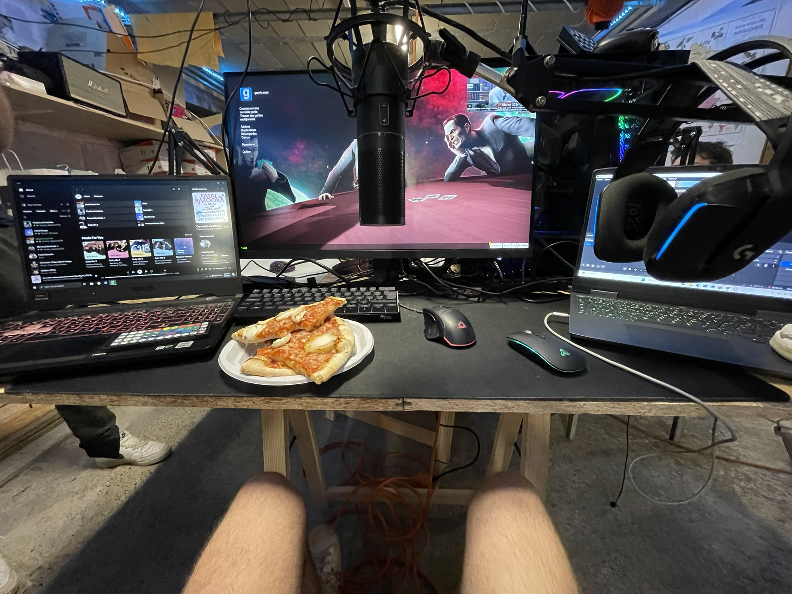La pause d√©jeuner c'√©tait pizza üçï!
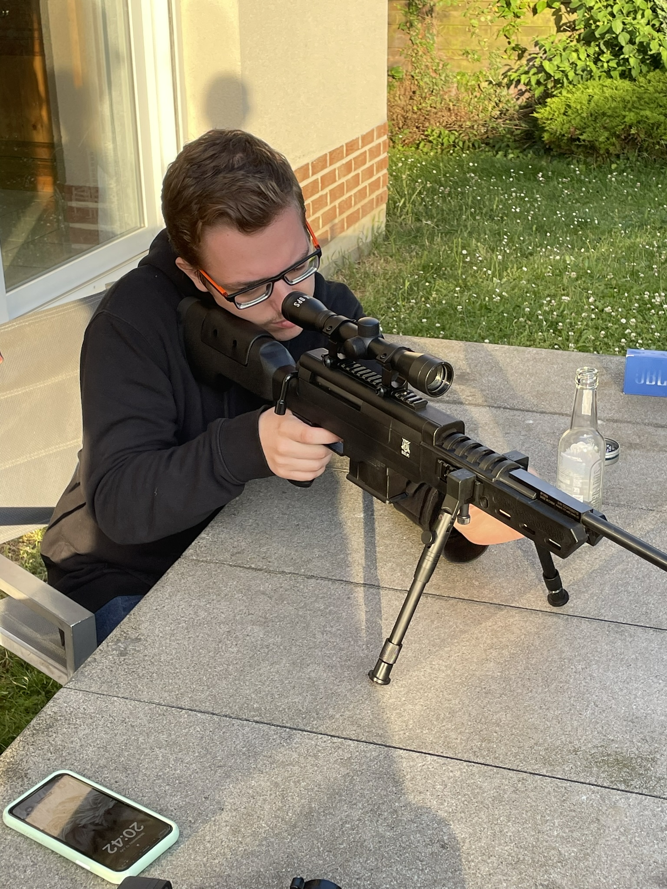Je sais, vous vous demandiez ce qu'est le "tir à la carabine". Je vais vous expliquer le tout. Tout à bord, la carabine que vous voyez en photo c'est une carabine qui nécéssite aucun permis, et ça n'est pas du plomb dedans ! Lorsque nous avons fait cette activité, elle a été entourée par des adultes.
Ici nous tirions simplement sur des cannettes vides ou une pastèque pourrie. Pour plus de sécurité, à l'arrière des objets sur lesquels nous tirions, nous avions mis une plaque en métal épaisse de sorte à ce que les balles n'allent pas plus loin.
Activités extérieur
Comme première activité externe à notre lan nous sommes allés de 1h à 5h du matin à EVA.
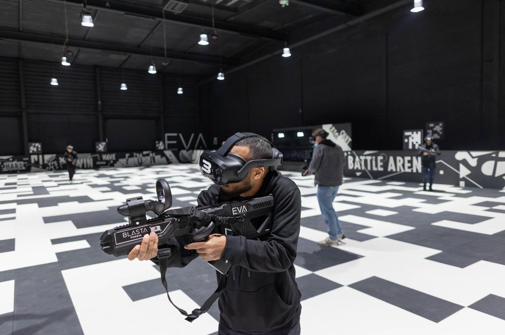Le principe d'EVA est un concept innovant de divertissement mêlant réalité virtuelle (VR) et e-sport. Les joueurs, équipés de casques VR et d'armes connectées, évoluent librement dans des arènes de 500 m², offrant une immersion totale dans des univers futuristes.
Si vous êtes intéressé je vous mets le site ici : Site d'EVA
Et comme dernière activité nous avons fait un escape game, ce fut une première pour nous tous. Nous l'avons fait à "Get out" à Amiens. Nous avons malheureusement échoué...
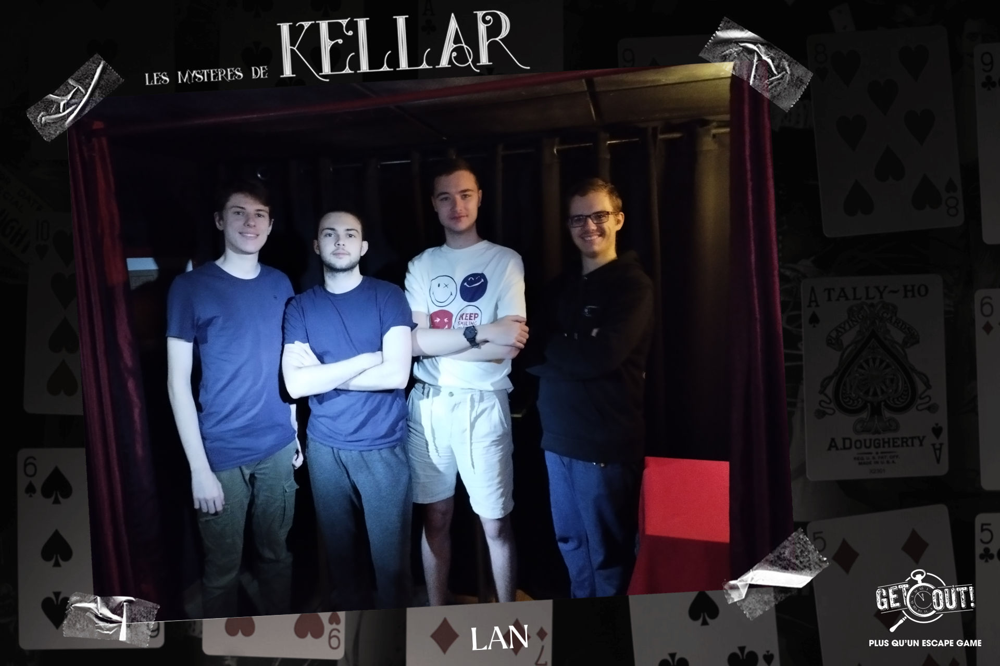